Blog académico para la asignatura de Biotecnología Agropecuaria.
Equipo:
Claudia Gabriela Ángeles Ángeles, David Chávez Cárdenas, Gallardo Noriega Ibrahim, Godinez Cuevas Airam Alexa, Sandra Ivette González Briones, Angélica Denisse Roman Hernández
Grupo 8220851
Profesor: Ernesto Gerardo Mendoza González
La biotecnología vegetal se ha consolidado en las últimas décadas como una de las disciplinas científicas más disruptivas y prometedoras para el futuro de la humanidad. En su esencia, representa la convergencia perfecta entre los secretos milenarios del reino vegetal y las herramientas de vanguardia de la biología molecular, la genética, la bioquímica y la bioingeniería. Su propósito central no es otro que descifrar, manipular y optimizar las propiedades celulares, fisiológicas y genéticas de las plantas, transformando nuestro entendimiento botánico en soluciones tecnológicas tangibles. A través de este enfoque, la ciencia ha logrado trascender los límites de la agricultura tradicional y la evolución natural, abriendo la puerta al diseño de estrategias avanzadas para la propagación masiva, la conservación a largo plazo de la biodiversidad y el mejoramiento genético de precisión. A diferencia de los métodos de selección ancestrales, que dependían de cruces sexuales azarosos y de la lenta espera de ciclos reproductivos anuales, la biotecnología vegetal interviene directamente en la maquinaria más íntima de las plantas. Este nivel de control microscópico y molecular es hoy más urgente que nunca. Nos encontramos en un siglo XXI marcado por desafíos globales sin precedentes: una población mundial en crecimiento exponencial que demanda una mayor seguridad alimentaria, una pérdida alarmante de suelo cultivable debido a la erosión, y los efectos severos del cambio climático, que azotan a los cultivos con sequías prolongadas, salinización de los acuíferos y la aparición de nuevas plagas hiperresistentes. Ante este panorama, las plantas ya no pueden ser vistas únicamente como organismos estáticos sujetos a las inclemencias del entorno, sino como sistemas biológicos dinámicos y altamente adaptables que podemos fortalecer en el laboratorio. El verdadero motor que hace posible esta revolución biotecnológica radica en el conocimiento ultraprofundo de la anatomía y la fisiología celular de las plantas. Estructuras que antes se estudiaban desde una perspectiva meramente descriptiva, hoy se reconocen como las llaves maestras de la innovación. Por ejemplo, la rigidez de la pared celular deja de ser solo una barrera para convertirse en el punto de partida de la obtención de protoplastos; los plastidios, como los cloroplastos, se transforman en potentes fábricas de proteínas y biofármacos mediante la ingeniería del plastoma; la sofisticada red de los tejidos vasculares (xilema y floema) dicta las pautas para diseñar los medios nutritivos perfectos; y los meristemos, esos santuarios de células madre vegetales, se aprovechan como zonas libres de virus para limpiar de patógenos a cultivos enteros. Comprender la íntima relación entre estas estructuras y sus funciones genéticas es lo que permite a los científicos dominar fenómenos tan asombrosos como la totipotencia celular. Este principio biológico, que dicta que cualquier célula vegetal tiene el potencial de regenerar un organismo completo, es el pilar que sostiene el cultivo in vitro, la micropropagación industrial y la edición genética. Así, la introducción a la biotecnología vegetal es, en realidad, la apertura a un escenario donde las plantas se rediseñan para ser el sustento eficiente, sostenible y resiliente del mañana.
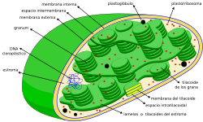
La pared celular es una estructura rígida compuesta principalmente por celulosa que brinda soporte, protección y forma a las células vegetales. Los plastidios son organelos exclusivos de las plantas; entre ellos destacan los cloroplastos, responsables de la fotosíntesis y la producción de energía química.
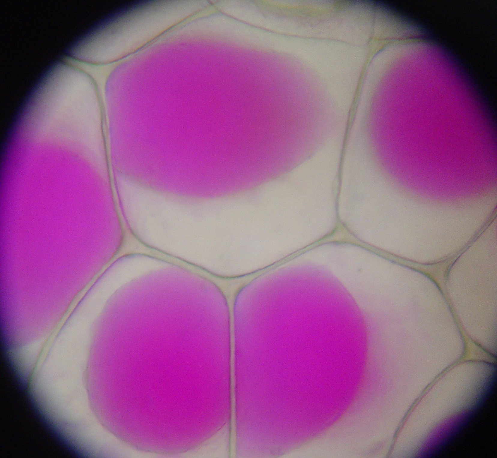
La vacuola central es un compartimento de gran tamaño que almacena agua, nutrientes, pigmentos y productos de desecho. También regula la presión de turgencia, permitiendo que la planta mantenga su estructura y crecimiento.
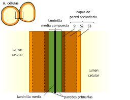
La pared celular vegetal está organizada en pared primaria y secundaria. Esta estructura proporciona resistencia mecánica, regula el crecimiento celular y participa en la comunicación entre células mediante conexiones especializadas.
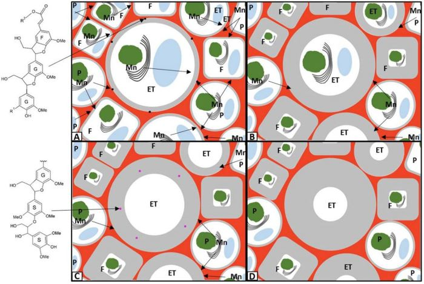
La lignina es un polímero complejo que se deposita en la pared celular secundaria. Su función principal es proporcionar rigidez, resistencia y protección a los tejidos vegetales, especialmente en el xilema.
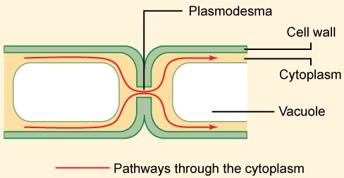
Los plasmodesmos son canales microscópicos que atraviesan las paredes celulares y conectan células vecinas. Permiten el intercambio de nutrientes, señales químicas y moléculas reguladoras entre las células vegetales.
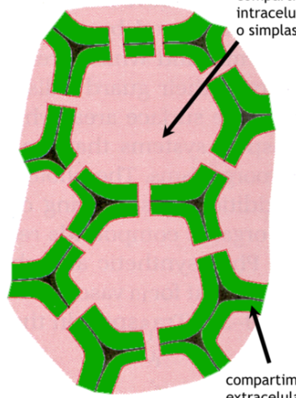
El simplasto es la red continua formada por los citoplasmas de las células vegetales conectadas mediante plasmodesmos. A través de esta vía se transportan sustancias como azúcares, hormonas y metabolitos.
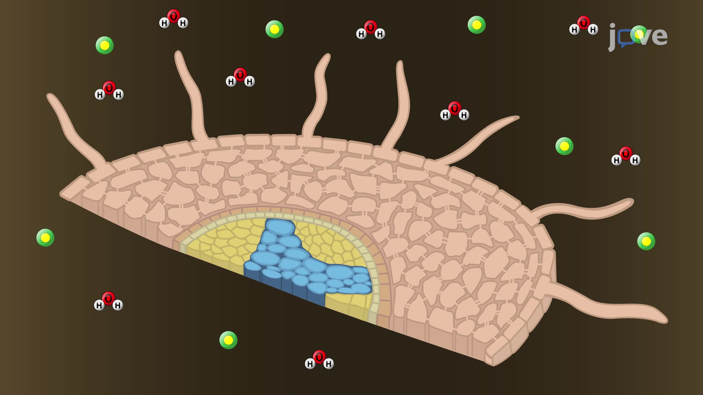
El apoplasto comprende las paredes celulares y los espacios intercelulares de la planta. Constituye una ruta de transporte para el agua y los minerales sin necesidad de atravesar membranas celulares.
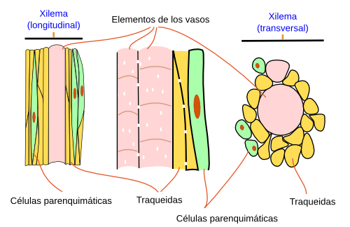
El xilema es el tejido vascular encargado de transportar agua y minerales desde las raíces hacia las hojas. Además, proporciona soporte estructural gracias a sus paredes celulares lignificadas.
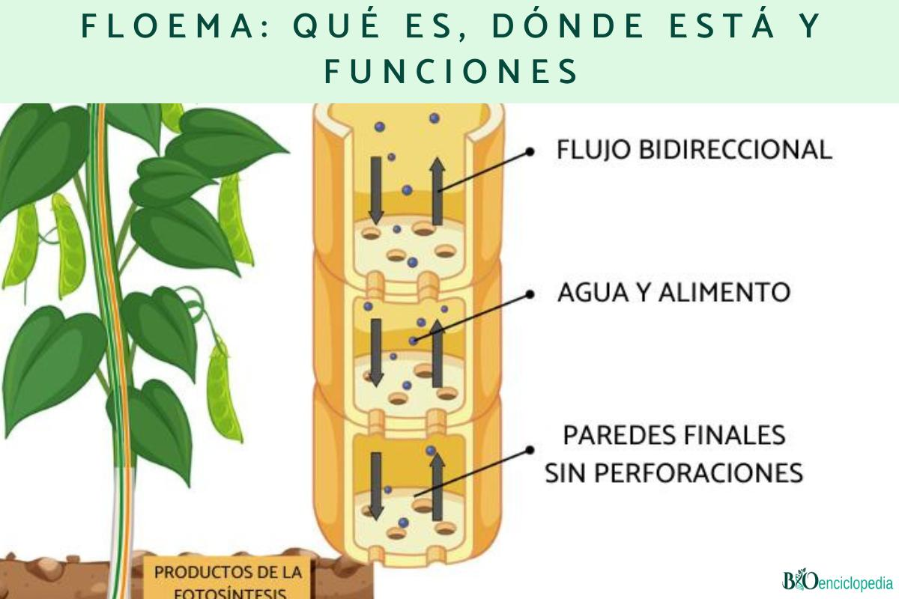
El floema es el tejido vascular responsable de distribuir azúcares, aminoácidos y otras sustancias orgánicas producidas durante la fotosíntesis hacia las diferentes partes de la planta.
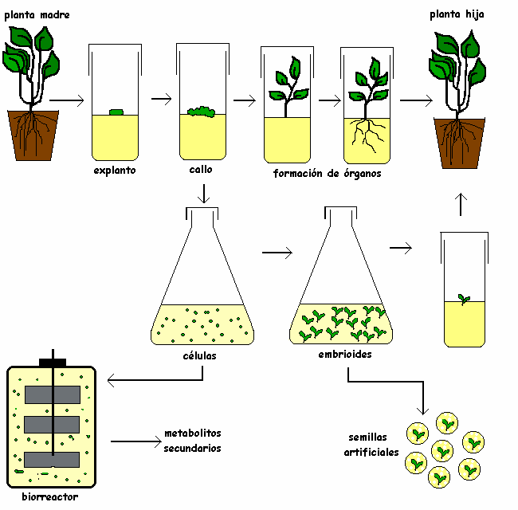
La totipotencia es la capacidad que posee una célula vegetal para regenerar una planta completa bajo condiciones adecuadas. Este principio constituye la base del cultivo de tejidos y la micropropagación vegetal.
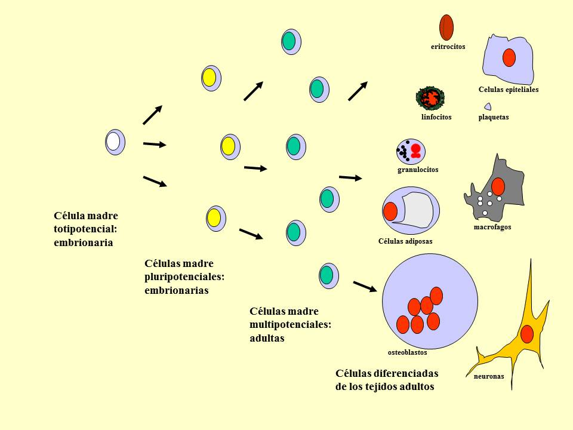
La diferenciación celular es el proceso mediante el cual una célula adquiere características y funciones específicas, formando tejidos especializados como xilema, floema o epidermis.
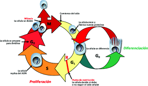
La desdiferenciación ocurre cuando células especializadas recuperan su capacidad de división celular. Este proceso permite la formación de callos utilizados en técnicas de cultivo in vitro.
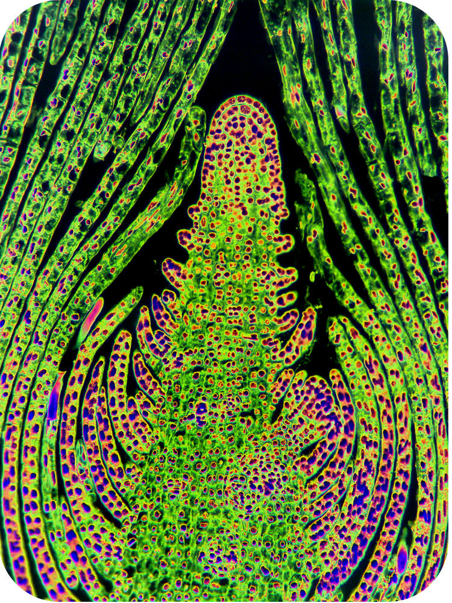
La rediferenciación es el proceso por el cual células de un callo vuelven a especializarse para formar órganos, tejidos o plantas completas durante la regeneración in vitro.
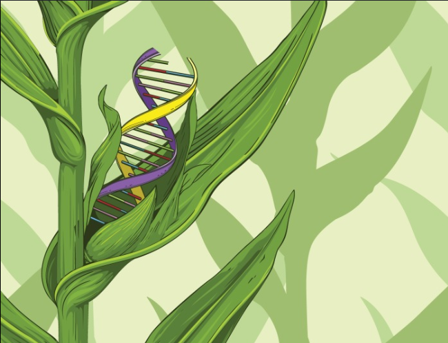
La plasticidad genómica es la capacidad de las células vegetales para modificar la expresión de sus genes en respuesta a cambios ambientales o condiciones de cultivo, facilitando su adaptación.
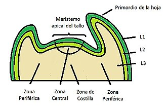
El meristemo apical es una región de células en constante división ubicada en los extremos de raíces y tallos. Es responsable del crecimiento longitudinal de la planta.
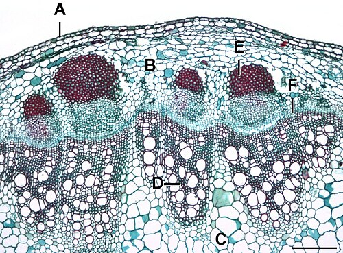
El cambium vascular es un meristemo lateral que produce xilema y floema secundarios. Su actividad permite el crecimiento en grosor de tallos y raíces.
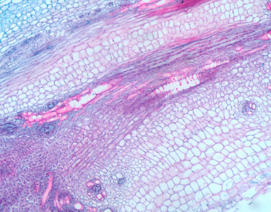
El meristemo intercalar se localiza en la base de hojas y entrenudos, especialmente en gramíneas. Permite el crecimiento rápido y la regeneración después de daños o podas.
Capacidad de una célula vegetal para regenerar una planta completa.
Proceso mediante el cual una célula adquiere funciones especializadas.
Permiten obtener plantas libres de enfermedades y son esenciales para la micropropagación.
Generalmente hojas jóvenes, hipocótilos y segmentos de tallo debido a su elevada capacidad regenerativa.
Pueden permanecer abiertos, ocasionando pérdida excesiva de agua durante la aclimatación.
Estimulan la división celular, la formación de raíces y la inducción de callos.
Se favorece la formación de brotes y tallos según el modelo de Skoog y Miller.
Establecimiento, multiplicación, enraizamiento y aclimatación.
La directa forma órganos desde el explante; la indirecta requiere la formación previa de un callo.
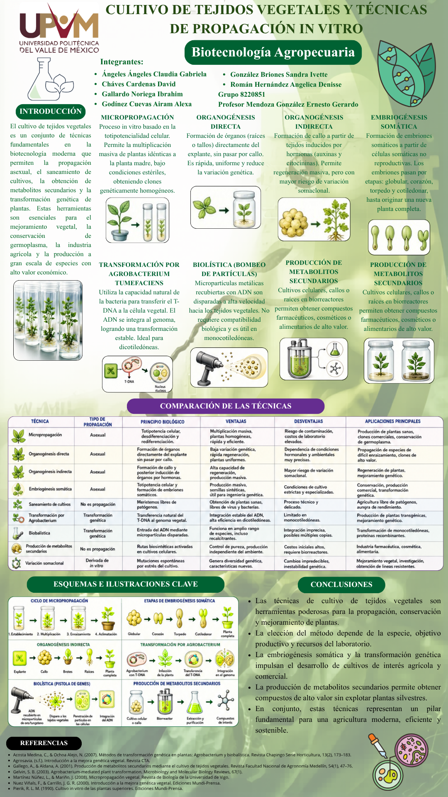
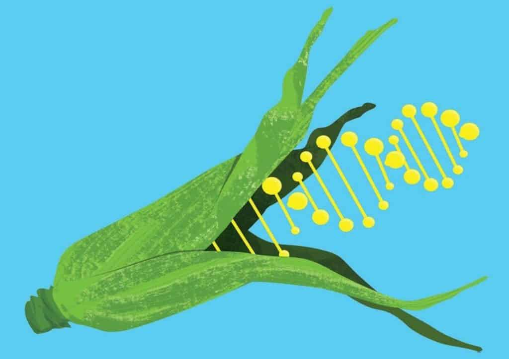
Un organismo genéticamente modificado (OGM) es aquel cuyo ADN ha sido alterado mediante técnicas de ingeniería genética para introducir, eliminar o modificar características específicas.
Importancia biotecnológica: Permite desarrollar cultivos con características deseables de manera más rápida y precisa que los métodos tradicionales.
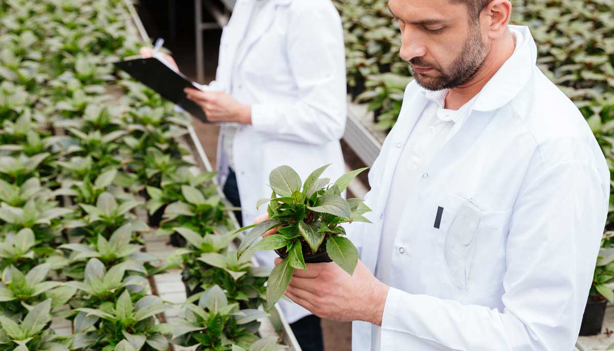
Los OGM pueden diseñarse para resistir plagas, enfermedades, herbicidas o estrés ambiental.
Importancia biotecnológica: Contribuyen al incremento de la productividad agrícola.
El uso de OGM está regulado mediante leyes y protocolos que buscan proteger la salud humana y el ambiente.
Importancia biotecnológica: Favorece el uso responsable de la ingeniería genética.
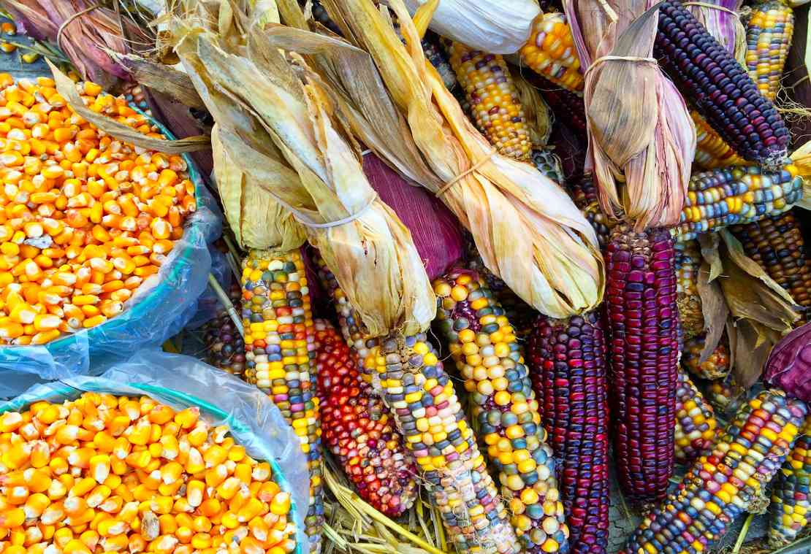
Los OGM ofrecen beneficios productivos, pero también plantean retos relacionados con bioseguridad y aceptación social.
Importancia biotecnológica: Permiten analizar riesgos y beneficios para la agricultura.
El éxito y el despliegue de la biotecnología vegetal moderna no son fortuitos; se cimientan firmemente en la profunda comprensión de la anatomía, la comunicación y la plasticidad celular de las plantas. El dominio de estructuras microscópicas como la pared celular y los plastidios, sumado al control de las vías de transporte vascular (xilema y floema) y los sistemas de comunicación celular (simplasto y apoplasto), ha transformado la botánica teórica en una ingeniería aplicada de precisión. Cada uno de estos componentes funciona como un engranaje clave que permite recrear, manipular y optimizar las condiciones de vida vegetal dentro de un entorno controlado en el laboratorio. El verdadero núcleo operativo de esta disciplina radica en la manipulación de los tejidos meristemáticos y en el control del destino celular. Fenómenos como la diferenciación, la desdiferenciación y la rediferenciación celular —guiados por el balance preciso de fitohormonas como las auxinas y citocininas según el modelo de Skoog y Miller— demuestran que el genoma vegetal posee una plasticidad excepcional. Es precisamente la totipotencia celular la propiedad biológica que actúa como el puente definitivo entre la teoría y la práctica: la asombrosa capacidad de inducir que un pequeño fragmento de tejido o un callo amorfo regenere una planta completamente funcional, sana y morfológicamente íntegra. Finalmente, la integración de estos conocimientos abre un abanico de soluciones metodológicas críticas, representadas en técnicas como la micropropagación y la organogénesis, ya sea directa o indirecta. A pesar de los retos fisiológicos inherentes al proceso, como la delicada regulación de los estomas durante la fase crítica de aclimatación ex vitro, la biotecnología vegetal se posiciona como una herramienta indispensable. Al permitir la obtención de material libre de patógenos a través de meristemos apicales y optimizar los sistemas de multiplicación, esta ciencia no solo revoluciona la productividad agrícola, sino que ofrece alternativas reales y eficientes para la conservación de la biodiversidad y el desarrollo de cultivos resilientes frente a las exigencias del mañana.
Este blog fue elaborado exclusivamente con fines educativos para la asignatura de Biotecnología Agropecuaria. Las imágenes utilizadas pertenecen a sus respectivos autores y se emplean únicamente como apoyo visual para la comprensión de los temas abordados. Los videos mostrados se encuentran alojados en YouTube y son propiedad de sus respectivos creadores. Su inclusión se realiza mediante la herramienta oficial de inserción proporcionada por dicha plataforma. No se persiguen fines comerciales ni lucrativos con este material.